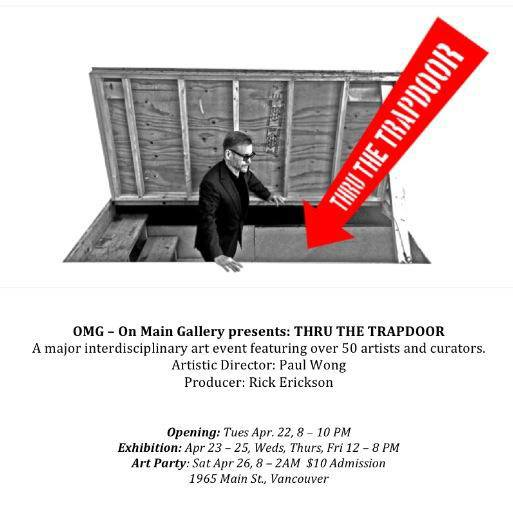

PoSSeSSiONz is an interactive video and sound installation that plays upon the spectral. In providing glimpses and echoes, the narrative associated with hoarded stuff surfaces as a visual memory-scape accompanied with gesture controlled synthesizer sounds combined with urban soundscape. A lonely darkened storage unit is transformed by a magic lantern into a shadow box showroom.
Laura Lee Coles, Rob Scharein and Dave Leith, will present an interactive video and sound installation using a depth sensing camera and custom software, Video Orb, to combine temporal experiences of embodiment in space and place within the theme of hoarding.

Link to show announcement (pdf)
A photo of the video projection (6 layers of video imagery)
This images show Video Orb’s delivery of six separate videos triggered by a participant’s movement with the kinect in the work Textura Corpus, which Coles, Scharein & Leith are developing during a current artist-residency.
As the participant moves they can “collage” images onto the “skin” of their new body. For PoSSeSSiONz participants will change the texture of their projected body image, with various images of discarded refuse, belongings, stacked items the artists will film and record during the final “move-out”; culminating in the participant finding a surprising image, which will project only when the person is at the correct trigger point. To find this surprising image, one must become a voyeur.
As the audience moves through the performance space, the interactive soundscape will alter dynamically to both location and gestures of the audience. An ever-shifting soundscape will be created correlating the imagery and movement. The initial sound material is drawn from natural field recordings and analogue synthesized sounds then further digitally processed.

I did the programming for the audio component in Max/MSP